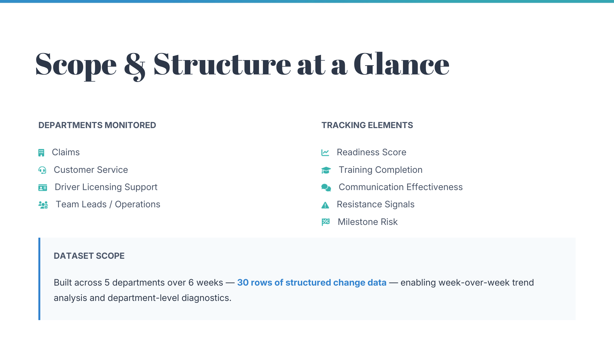
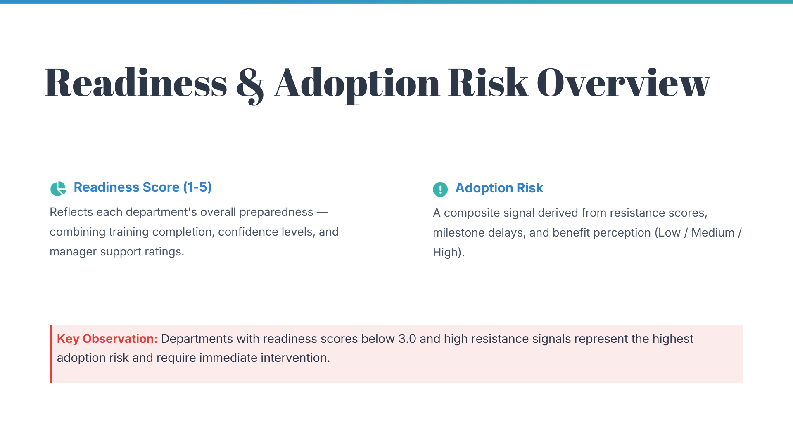
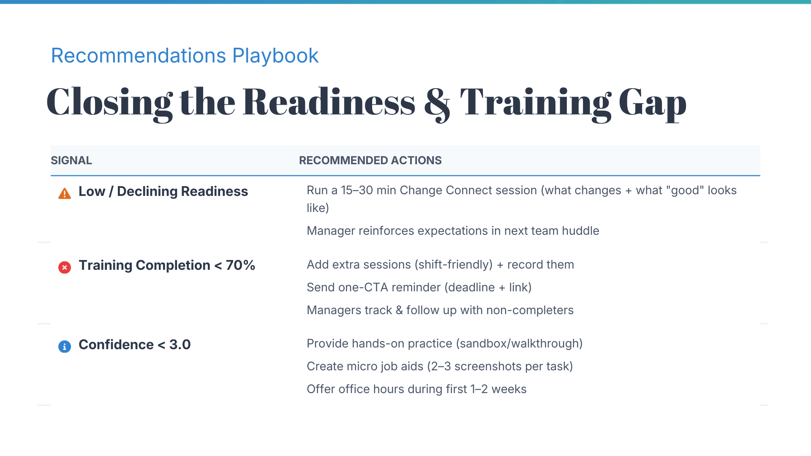
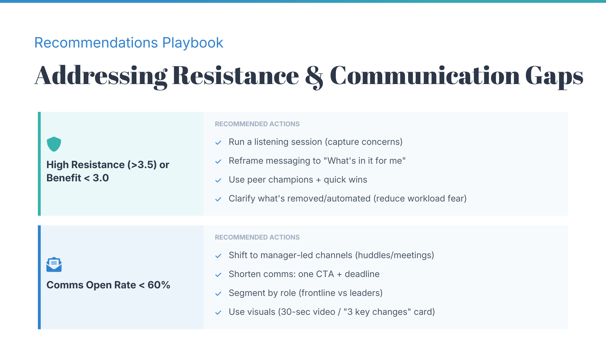
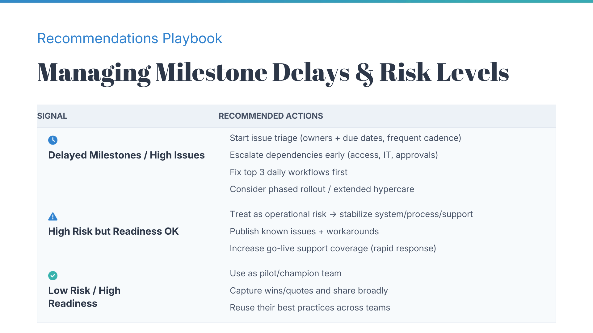

Change Adoption Pulse
Enterprise rollout scenario for a new internal case/task management system across departments.
The company is rolling out a new internal system, and different departments are at different stages of readiness. This dashboard consolidates key change metrics to assess adoption progress and pinpoint where support is needed most. It helps answer which teams are least prepared, where communication and training efforts should be prioritized, and which signals are most strongly associated with low vs. high adoption risk.
Key Scores
How prepared is this team to adopt?
Built from survey readiness + training progress + leadership alignment.
Inputs (weighted)
- Awareness (20%)
- Understanding (20%)
- Confidence (20%)
- Benefit (15%)
- Training (15%)
- Manager Briefing (10%)
Survey scores are normalized from 1-5 to 0-100 for consistent scoring.
Higher score = higher adoption risk
Enablement gaps
- +15 Training < 70%
- +10 Confidence < 3.0
People / sentiment signals
- +10 Resistance > 3.5
- +5 Benefit < 3.0
Delivery risk signals
- +10 Milestone delayed
- +5 Open issues ≥ 4
- +5 Open risks ≥ 3
Communication effectiveness
- +5 Comms open rate < 60%
Latest Week Snapshot (Week 6)
Department View (Week 6)
| Department | Readiness | Adoption Risk | Risk Band | Milestone | Top Concern |
|---|
6-Week Trend
| Week | Average Readiness | Average Adoption Risk | Departments Delayed |
|---|
Scope & Structure at a Glance
The slides below summarize the metric definitions, formulas used for scoring, and quick suggested improvements based on observed readiness and adoption risk patterns across departments.




